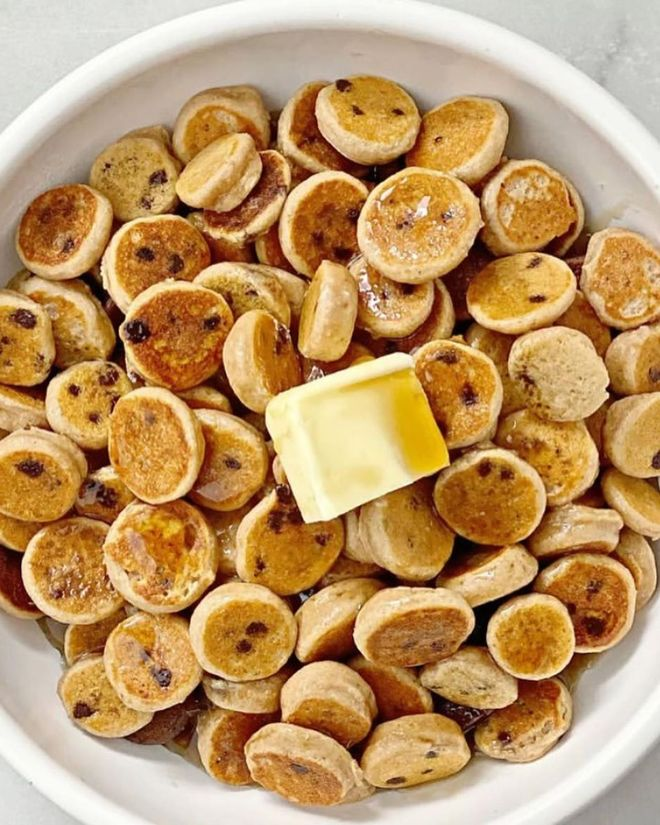

mini pancake cereal

mini pancake cereal is a perfect sweet way to start your day!
Ingredients:
- 1 cup flour
- 2 tablespoons granulated sugar or sweetener
- 2 teaspoons baking powder
- 1/2 teaspoon salt
- 3/4 cup milk
- 2 tablespoons melted butter
- 1 teaspoon pure vanilla extract
- 1 large egg
Steps:
- Combine together the flour, sugar (or sweetener), baking powder and salt in a large-sized bowl. Make a well in the centre and add the milk, slightly cooled melted butter, vanilla and egg.
- Use a wire whisk to whisk the wet ingredients together first before slowly folding them into the dry ingredients. Mix together until smooth and lump-free. Add 1-2 extra tablespoons of milk if needed to just slightly thin out the batter. You don't want to it too runny.
- Let your pancake batter sit for about 5 minutes while heating a nonstick pan or griddle over medium-high heat. Lightly grease with a little butter or cooking oil (see notes).
- Pour pancake batter into a squeezable condiment/sauce bottle. (Alternatively, use a ziplock bag: cut a tiny hole on an angle in the bottom corner of the bag to pipe out the batter.)
- Squeeze small dots of batter onto HOT greased pan. Cook until the tops form bubbles and look set/dry. Flip with a spatula and cook until golden on the undersides, about a further 1-2 minutes. Repeat with remaining batter, lightly greasing your pan between each batch.
- Serve with maple syrup, honey, fruit, ice cream, frozen yoghurt, or enjoy plain!